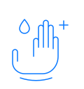
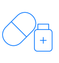
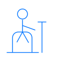
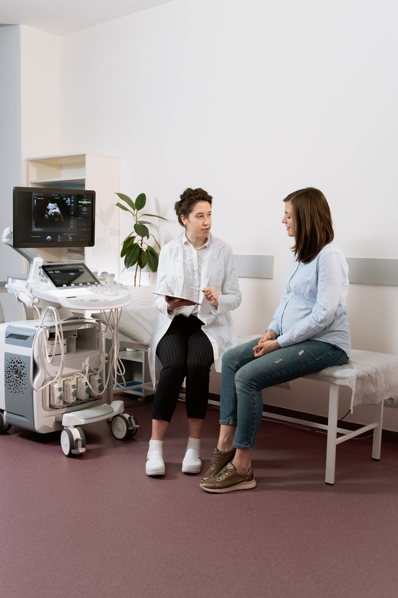

QUALITY, SAFETY & ACCREDITATION
Care you can
feel confident in.
Good care is personal. It’s also built on thoughtful decisions, careful checks and a commitment to keep getting better.
Our NABH certification
OUR CERTIFICATION
A recognised
standard of care.
Sita Ram Prasad Memorial Trust Hospital is NABH Entry Level Certified.
NABH’s Entry-Level Certification Programme provides a framework for patient safety, clinical governance and quality systems. It supports a culture of safe care and continuous improvement.
Learn about NABHTHE EVERYDAY DETAILS
Safety is in the
way we care.
From a first conversation to the journey home, small, consistent actions matter. Explore the safety priorities behind your care.

Clean hands.
Safer care.
Hand hygiene, clean equipment and careful infection prevention are essential parts of safer hospital care.
You can be part of safer care
- Feel comfortable asking whether hands have been cleaned.
- Let your care team know if you feel unwell before a visit.
The right care.
The right person.
Identity checks help connect every test, medicine and procedure with the person it is intended for.
You can be part of safer care
- Expect to be asked to confirm your name and another identifier.
- Tell the team if any detail on your records looks incorrect.

Every medicine.
Carefully considered.
Clear information about medicines and allergies supports safer prescribing, dispensing and administration.
You can be part of safer care
- Share your current medicines, including supplements.
- Ask what a medicine is for and how it should be taken.
Checks before.
Care throughout.
Preparation, consent and team checks help everyone understand the plan before a procedure begins.
You can be part of safer care
- Ask your clinician to explain the procedure and your options.
- Tell the team about allergies or any change in how you feel.

A little support.
A safer stay.
A new environment, illness or some medicines can affect balance. Asking for help is part of looking after yourself.
You can be part of safer care
- Ask a member of your care team if you need help moving.
- Keep your call bell and personal items within reach.
One team.
A shared understanding.
Good communication helps important information travel with you between people, departments and stages of care.
You can be part of safer care
- Ask for an explanation whenever something is unclear.
- Before leaving, check that you understand your next steps.

ALWAYS IMPROVING
Better care starts
with listening.
Quality is an ongoing commitment. Listening to patients, reviewing care and learning together help make the next experience better.
Listen carefully
Make space for patient experiences, questions and concerns.
Learn together
Use feedback and care reviews to understand what can improve.
Keep improving
Turn learning into clearer processes and more thoughtful care.
YOUR VOICE MATTERS
It’s always okay to ask.
What does NABH Entry Level Certification mean?
NABH’s Entry-Level Certification Programme is a quality framework covering patient safety, clinical governance and hospital quality systems. It provides a foundation for continuing improvement.
Read more from NABHWhere can I ask about the hospital’s certification?
Contact our team for information about the scope of our certification and the current certificate. We’ll help direct your enquiry to the right person.
Contact our hospitalWhat if I have a concern about my care?
If you are in the hospital, tell your nurse or treating doctor as soon as you can. You can also contact the hospital to share feedback or ask who to speak with about a concern.
Share a concernCan my family be involved in my care?
Let your care team know who you would like involved. You can ask for explanations, discuss your preferences and take time to understand the next steps in your care.
GET IN TOUCH
Let’s find your next step.
Tell us what you need, and we’ll help you find the right care and a time that works for you.
Request an appointment